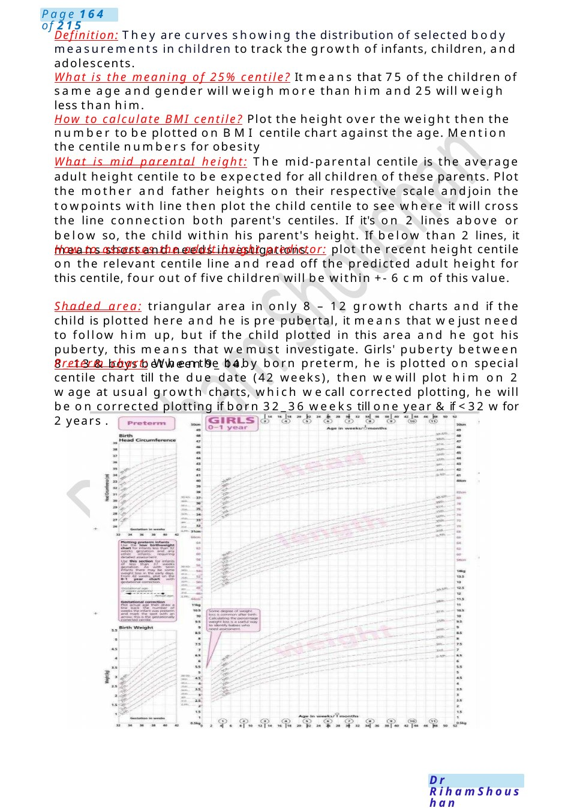

Obesity
Obesity Either to mother or medical student( Draw the chart and explain on it) 1. Mother came to discuss the report of 10 year was investigating for obesity and reports were normal. The father is obese and diabetic Her BMIwas on the 99th centile.
Scenario Summary
Obesity Either to mother or medical student( Draw the chart and explain on it) 1. Mother came to discuss the report of 10 year was investigating for obesity and reports were normal. The father is obese and diabetic Her BMIwas on the 99th centile.
Full Original Scenario

Obesity
Obesity Either to mother or medical student( Draw the chart and explain on it)
Scenarios:
1. Mother came to discuss the report of 10 year was investigating for obesity and reports were normal. The father is obese and diabetic Her BMIwas on the 99th centile.
2. Bayan is a medical student, meet her concern in a case came for the 2nd time with UTI. - The case wasobese; BMI is 33, wt. 65kg, ht. 143cm, Father has obesity, HTN:BPon 99th centile, DM.Has obese twins also. - Role player was so talkative &asking questions not related to scenario. - Qduring scenario: how to plot on growth chart? complications, management? Advice? Causes of obesity? WhyUTI
Definition: BMIcentile is the best indicator of fatness and classification of obesity in children.
BMI centile chart classification of obesity: >91st centile: overweight, >98th centile: very overweight, >99.6th centile: severely obese, +3.3 SD: morbidly obese.
Causes acc to your scenario (usually mentioned the examination going with simple obesity due to sedentary lifestyle). If no clue so, it can be simple obesity, genetic causes like Prader Willi $, chromosomal abnormalities, endocrine causes like hypothyroidism.
Complications: on the child (DM type 2, hyperlipidaemia, microalbuminuria, hypertension, polycystic ovary, OSA,low self-seem, SUFE,recurrent UTI.
Investigations: Urine test for glucose, Blood pressure, Pubertal assessment, Thyroid function, Randomglucose, (HbA1c), Lipid profile, Liver function. Other lab test acc to the secondary causes. Radiology for OSA,hip x Ray, abdominal US.
Management: we have role for the child, family, community and school as well. Main target is lifestyle changes for the whole family, treatment of complication if happened either medical for DM type 2 initially metformin up to insulin injection when (glycated Hb ≥8.5% and/or osmotic symptoms).Angiotensin receptor antagonist or ACEinhibitor for Microalbuminuria or Hypertension.
Laise with school authority for controlling the school canteen food provided for the students, encourage more physical exercises &deal with bullying issues for the children with obesity and to some educational sessions for the kids about obesity.
Advice: about lifestyle changes, follow up with the team, diet management.
Team: involve Dietitian, endocrinologist, CAMPS,other speciality acc to the complications.
- Growth Chart to medical student
Draw: Growth charts (wt. &ht., BMIcentile chart, mid parental height chart, preterm chart, shaded area on the chart).

Definition: They are curves showing the distribution of selected body measurements in children to track the growth of infants, children, and adolescents.
What is the meaning of 25% centile? It means that 75 of the children of same age and gender will weigh more than him and 25 will weigh less than him.
How to calculate BMI centile? Plot the height over the weight then the number to be plotted on BMI centile chart against the age. Mention the centile numbers for obesity
What is mid parental height: The mid-parental centile is the average adult height centile to be expected for all children of these parents. Plot the mother and father heights on their respective scale andjoin the towpoints with line then plot the child centile to see where it will cross the line connection both parent's centiles. If it's on 2 lines above or below so, the child within his parent's height. If below than 2 lines, it means short and needs investigations.
How to assesses the adult height predictor: plot the recent height centile on the relevant centile line and read off the predicted adult height for this centile, four out of five children will be within +- 6 cm of this value.
Shaded area: triangular area in only 8 – 12 growth charts and if the child is plotted here and he is pre pubertal, it means that wejust need to follow him up, but if the child plotted in this area and he got his puberty, this means that wemust investigate. Girls' puberty between 8_ 13 &boys between 9_ 14.
Preterm chart: Whenthe baby born preterm, he is plotted on special centile chart till the due date (42 weeks), then wewill plot him on 2 wage at usual growth charts, which wecall corrected plotting, he will be on corrected plotting if born 32_36 weeks till one year &if <32 wfor 2 years .

NF1
Addison
- NF1(TS follow same points).
Explain the disease and criteria found in the opening statement.
Inheritance of the disease and the need of screening of you and your husband first if you do not have the condition the risk will be like other population, however if one of you has the disease the risk will be 50 %for every child.
If the mother has café au lait, advise her to seek help from adult doctors.
Need for follow up especially blood pressure and to do regular investigations to interfere immediately if she has any complications.
Team: nerve doctor, gene doctor, eye doctor, tumour doctor, plastic surgeon, glands doctor. Prognosis, it’s controllable (no final treatment).
It ’s a clinical diagnosis, however being a gene problem condition, we will arrange a meeting with gene doctor.
- Addison disease: breaking bad news
Explanation: pointing to renal angle, there is a beanlike structure called kidney, above this kidney there is a gland that secretes chemical substance called steroid, this steroid is very important in our body as it regulates our blood pressure, our blood sugar and howbody deal with stressful situation
Also, wehave our defense system, it acts like a soldier defending our body against germs, but here it attacks also this gland result in no steroid
Treatment: steroid from outside for the rest of your life as there is no steroid in your body and that is whywemust take it from outside.
He may refuse Because it has many drawbacks : it can cause diabetes, it can cause hypertension , makes meshort, obese yes but that these drawback mayoccur if you have steroid in your body and you are taking extra from outside , but here you do not have any steroid in your body and that it is replacement.
Wewill follow youup and wewill monitor your blood pressure and your blood sugar and follow your weight on the growth chart if anything happened, wewii definitely interfere immediately.
Awareness & advice about symptoms of hypoglycemia sometime, you mayfeel tired, back pain and dizzy at this time, you have to seek medical advice immediately because it means there is not enough amount of steroid in your body.
He has to wear a bracelet and to have steroid card, avoid triggers and infectious places.